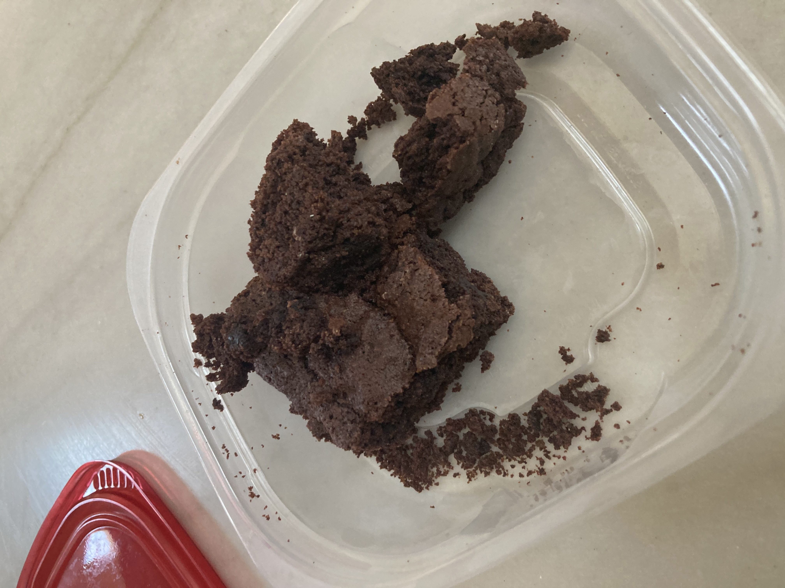

Home
Brownies

Description
Apprently swindled from our Junior High lunchlady, the original recipe was labeled only as "US", presumably to indicate American measurements.
You can customize your desire texture (fudgy or caky) simply by baking for less or more time respectively.
Ingredients
- 1 Cup Vegetable Oil
- 2 Cups Sugar
- 2 tsps Vanilla
- 4 large Eggs
- 1/2 tsp Baking Powder
- 2/3 Cup Cocoa Powder
- 1/2 tsp Salt
- 1 Cup Flour
Steps
- Preheat oven to 350F.
- Mix oil and sugar until well blended.
- Add eggs and sugar; stir just until blended.
- Mix all dry ingredients in a separate bowl.
- Stir dry ingredients into the oil/sugar mixture.
- Pour into greased 9 x 13 pan.
- Bake @350 for 30 minutes (or until toothpick comes out with the desired consistency).
- Cool completely before cutting.